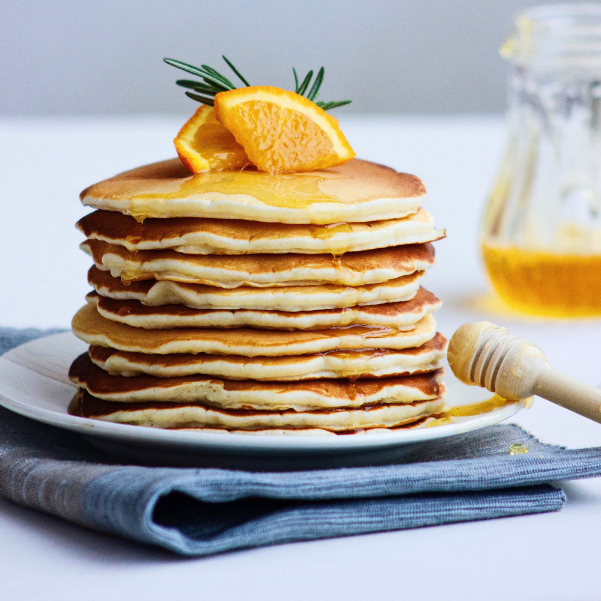

Good Old Fashioned Pancakes
Description
This is a great recipe that I found in my Grandma's recipe book.
Judging from the weathered look of this recipe card,
this was a family favorite.
Ingredients
- 1 ½ cups all-purpose flour
- 3 ½ teaspoons baking powder
- ¼ teaspoon salt, or more to taste
- 1 tablespoon white sugar
- 1 ¼ cups milk
- 1 egg
- 3 tablespoons butter, melted
Directions
- In a large bowl, sift together the flour, baking powder, salt and sugar.
Make a well in the center and pour in the milk, egg and melted butter; mix until smooth. - Heat a lightly oiled griddle or frying pan over medium-high heat.
Pour or scoop the batter onto the griddle, using approximately 1/4 cup for each pancake.
Brown on both sides and serve hot.
Nutrition Facts
Serving: 158 calories; protein 4.5g; carbohydrates 21.7g;
fat 5.9g; cholesterol 37.7mg; sodium 503.6mg. Full Nutrition